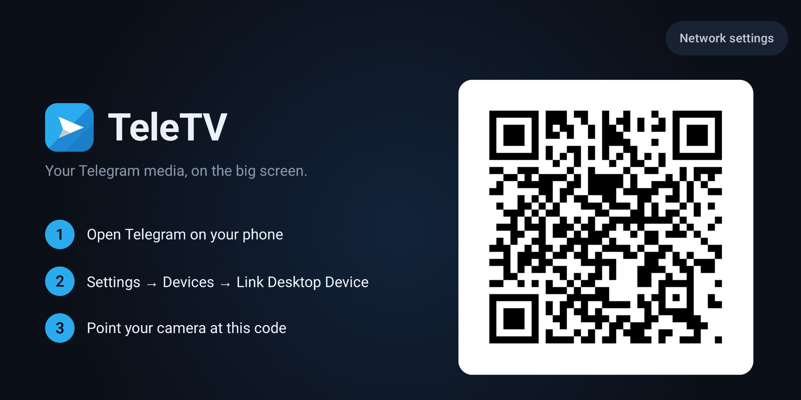
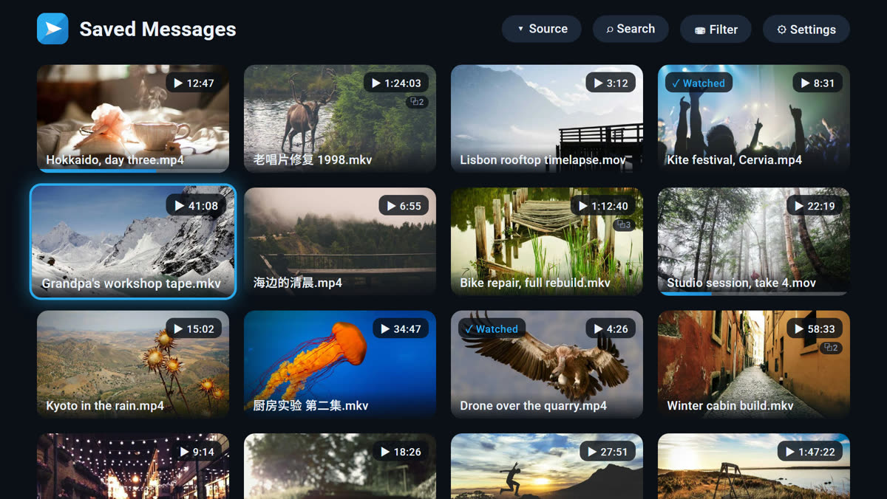

扫一次码，之后不用再管
用手机上的 Telegram 扫码登录。开了两步验证的账号会弹出 PIN 键盘，不用遥控器打密码。


技术栈
没有配套服务器，除了你自己的 Telegram 账号不需要注册任何东西，索引也不放在别处。
用手机上的 Telegram 扫码登录。开了两步验证的账号会弹出 PIN 键盘，不用遥控器打密码。

文件名和说明会被解析成本地索引：片名、人名、年份。没有任何文字离开这台电视。
用遥控器输入首字母，模糊匹配中文标题。
part1、CD2、_003 这类分卷会被识别并合并为同一个条目。
支持流式的视频直接走 TDLib 的分块下载播放。其余的会先下载并显示进度，然后播放。
播放器完全用方向键操作，这里没有任何东西需要鼠标或键盘。
上一个或下一个条目
播放与暂停
后退或快进 10 秒
拖动进度按得越久，走得越快。
返回网格会记住播放位置。
你用自己的 Telegram API 凭据来构建 TeleTV。没有托管服务，电视和 Telegram 之间没有我们的后端，你的媒体也不会在别处留下副本。
标签索引是在本机从文件名和说明里解析出来、写进盒子上的数据库的。媒体标题、说明文字、搜索内容和 Telegram id 都不会外传。
你自己构建的版本默认关闭使用统计。仓库里没有分析密钥，全新 clone 编译出来是空值，所有调用都是空操作。只有填入自己的密钥后，电视上才会出现随时把它关掉的开关。
需要 Android Studio，或者 JDK 17 加 Android SDK，以及一台电视设备或模拟器镜像。
在 my.telegram.org 创建一个应用，然后复制示例文件，把 id 和 hash 填进去。这个文件不会进入 git。
cp local.properties.sample local.properties
Java 绑定已经随仓库提供；原生库体积太大无法提交，需要单独拉取一次。
bash app/src/main/jniLibs/fetch.sh
首次启动会显示二维码，用手机扫一次，登录状态就会一直保留。
./gradlew :app:installDebug